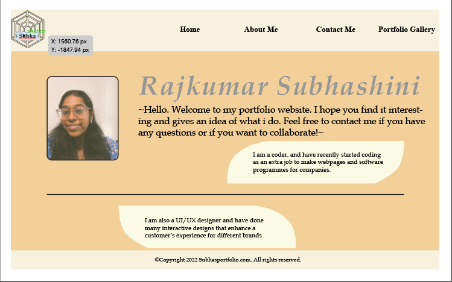
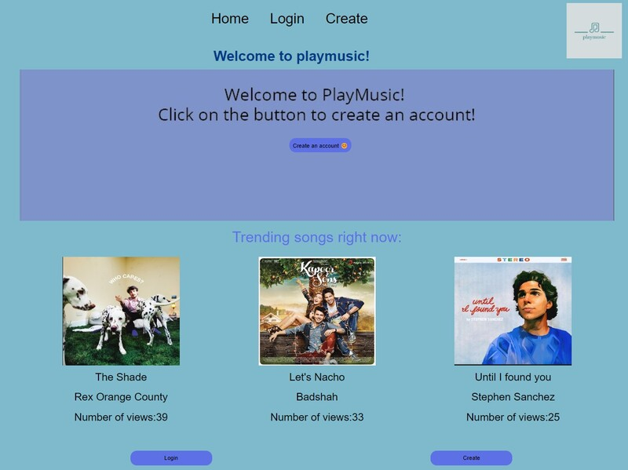
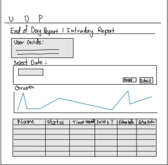
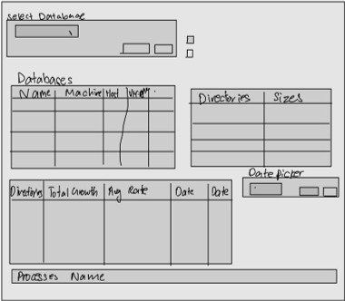

Portfolio
Projects
Diploma - Nanyang Polytechnic
2021-2024
Web Development

POLY - WEB - 01
Portfolio Website
A Year 1 Semester 2 project that started with Illustrator mockups for UI/UX and was then built into a working portfolio website using HTML and CSS.
View project

POLY - WEB - 02
PlayMusic!
A personalised audio web application where users could create accounts, manage playlists, browse a song library, and update account details using a PHP and MySQL workflow.
View project
Data & Analytics
Add image / PDF
POLY - DATA - 01
Your Project Title
Add your description here.
Add image / PDF
POLY - DATA - 02
Your Project Title
Add your description here.

Internship - J.P. Morgan
Mar-Aug 2023
Client Reporting & Messaging

JPM - WEB - 01
Trade Status Website
A website that helped clients review booked deals without manually checking databases, with separate end-of-day and intraday reporting views.
View project
JPM - MSG - 02
Reconciliation Delivery Message
An extension of the Trade Status Website that sent encrypted delivery messages with the latest booked deals to clients automatically.
View project
Monitoring & Automation

JPM - DATA - 03
Database Monitoring
An internal website for monitoring database health and growth using reusable components, APIs, Python functions, and SQL queries.
View project
Scheduled reporting
Daily database emails
Monitoring data transformed into styled reports for the team and management.
JPM - RPT - 04
Database Monitoring Email Report
A daily email reporting workflow that converted monitoring data into readable summaries with tables, styling, and scheduled delivery.
View project
University - SIT × University of Glasgow
2024-Present
Design & Research
Add PDF / images
UNI - DESIGN - 01
OIP Airport Design Project
Multidisciplinary project applying design thinking and research to solve real-world airport infrastructure challenges in the SIT-UofG Overseas Immersion Programme.
Web & Full Stack
Add screenshot / video
UNI - WEB - 01
SITxNVIDIA Web Apps
Production-ready web applications and MVPs built with Laravel (PHP) and Vite.js for the NVIDIA AI Centre.
Add screenshot / video
UNI - WEB - 02
Professional Software Dev
Six-month client-facing software development project with an external industry partner. Details can be updated on completion.
Systems & Embedded
Add image / video
UNI - SYS - 01
Embedded Systems Project
Add your embedded systems coursework project description here.
Add image / video
UNI - SYS - 02
OS / Systems Project
Add your operating systems or low-level systems project here.
Cloud & Distributed
Add image / PDF
UNI - CLOUD - 01
Cloud Computing Project
Add your cloud and distributed computing project description here.